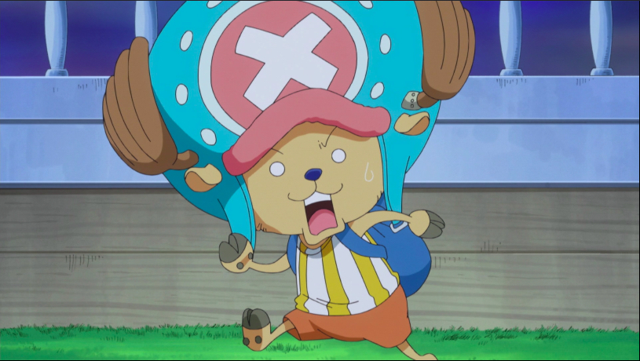
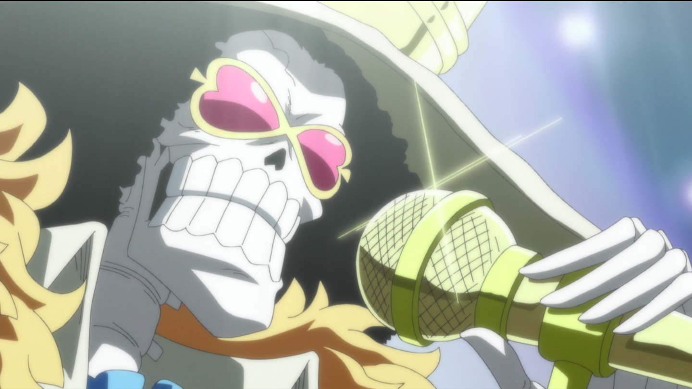
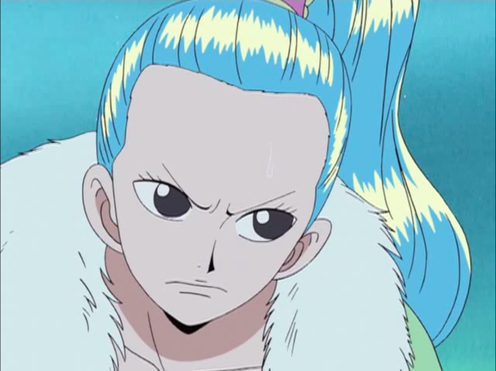

- Gear Second, Gear Third, Gear Fourth: Bounceman, Gear Fourth: Tankman, Gear Fourth: Snakeman
- Gum Gum: Pistol, Rocket, Missile, Whip, Stamp, Storm, Gatling
- Gum Gum Jet: Pistol, Rocket, Gatling, Stamp, Missile, Culverine
- Kong Gun, King Kong Gun, Black Mamba, King Cobra
- Resistance to heat, poison, cold
- Immunity to lightning


Monkey D Luffy
19
Captain of the Straw Hat Pirates

Roronoa Zoro
21
First Mate of the Straw Hat Pirates
- One Sword Style Iai: Death Lion Song
- One Sword Style: 36 Pound Rising Phoenix
- Two Sword Style Iai: Rashoumon
- Three Sword Style: Oni Giri
- Three Sword Secret Style: Three Thousand Worlds
- Three Sword Style: Dragon Twister
- Three Sword Secret Style: Billion Fold World Tri-Chiliocism
- Nine Sword Style: Asura: Blades Drawn: Dead Man's Game

Vinsmoke Sanji
21
Cook of the Straw Hat Pirates
- Diable Mutton Shot
- Collier Strike
- Joue Shoot
- Bien Cuit: Grill Shot
- Flambage Shot
- Spectre
- Hell Memories
- Concasser

"God" Usopp
19
Sniper of the Straw Hat Pirates
- Certain Kill: Firebird Star
- Pop Green: Devil
- Tobasco Star
- Lead Star
- Green Star: Bamboo Jave Grove
- Green Star: Platanus Shuriken
- Green Star: Rafflesia
- Super Grow Up: Great Kuro Kabuto: Bagworm
- Clima Takt: Mirage Tempo
- Clima Takt: Mirage Tempo: Fata Morgana
- Clima Takt: Weather Egg
- Clima Takt: Rain Tempo
- Clima Takt: Gust Sword
- Clima Takt: Thunderbolt Tempo
- Clima Takt: Thunder Breed Tempo
- Clima Takt: Thunnder Lance Tempo

- Brain Point
- Guard Point
- Heavy Point
- Speed Point
- Kung Fu Point
- Arm Point
- Jumping Point
- Monster Point
- Dos Fleur: Grab, Clutch
- Seis Fleur: Grab, Clutch, Slap
- Ocho Fleur: Flip, Clutch
- Nueve Fleur: Twist
- Once Fleur: Slam
- Treinta Fleur: Strangle, Hang, Clutch
- Cien Fleur: Delphinium, Wing, Spider Net, Rindo, Dos Manos
- Mil Fleur: Gigantesco Mano: Spank, Stomp
- Strong Right
- Weapons Left
- Franky Boxing
- Fresh Fire
- Franky Centaurus
- Coup de Vent
- General Shogun: Frankensword
- Franky Radical Beam

- Swallow Banderole
- Chill of the Underworld
- Soul Solid
- Hanauta Sancho: Tahazu Giri
- Nemuriuta Flanc
- Soul King
- Immunity to bleed, ice, fire, lightning, aging
- Afro

"First Son of the Sea" Jimbei
46
Helmsman of the Straw Hat Pirates
- Fishman Karate: Spear Wave
- Fishman Karate: Spear Wave: Murasame
- Fishman Karate: Arabesque Tile True Punch
- Fishman Karate: 5000 Tile True Punch
- Fishman Karate: Sharkskin Palm Thrust
- Fishman Karate: Shark Tile True Punch
- Fishman Jujutsu: Ocean Current Shoulder Throw
- Fishman Jujutsu: Whirlpool Shoulder Throw
And here are some honorary crewmembers!

- Now in a change of pace, Princess Vivi herself does not have all that many abilities.
- When we first meet Princess Vivi, she is an enemy working for the underground organization Baroque Works.
- Baroque Works was run by one of the Seven Warlords of the Sea: Crocodile.
- Fighting with her loyal attendant and fighting duck Carou, she inflitrated the organization to try and learn their true motives.

"Foxfire" Kin'emon
36
Leader of the Red Scabbards
- Similar to Princess Vivi, we have little in the ways of knowledge of Kin'emon's abilities.
- We meet Kin'emon on Punk Hazard, cut into pieces by Warlord Law's powers.
- Reassembled by Luffy's crew, Kin'emon lowers himself to ask for their help in rescuing Momonosuke, and his country.
- His known abilitie include Foxfire Style: Flame Rend and Oden Two Sword Style: Paradise Totsuka

"Oden" Yamato
28
"King of Beasts" Kaido's "son"
- And here we are at Yamato.
- Yamato was only recently introduced, and we have only been given the chance to see a small part of her power.
- "Son" of Kaido, the King of Beasts, Yamato was chained to the island Onigashima, forbidden from leaving.
- Inspired by Fire Fist Ace, Yamato has been waiting for Luffy to arrive on Onigashima to defeat her father.
- The only known abilites of Yamato to this point are Thunder Bagua, and the brief glimpse of a Devil Fruit power.